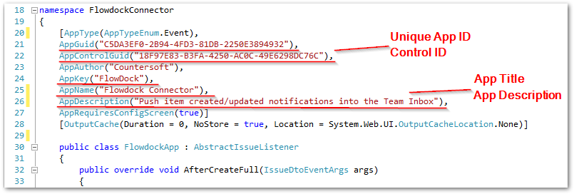

Event apps allow you to subscribe to Event Listeners and have your custom logic invoked when something happens.
A custom Event app consist of the following elements.

DownloadThe Countersoft GitHub repository contains sample applications that are built using the Apps Framework
Gemini Administrators can either enable or disable every Event App.
Follow the packaging and deployment instructions to deploy Event app in Gemini.